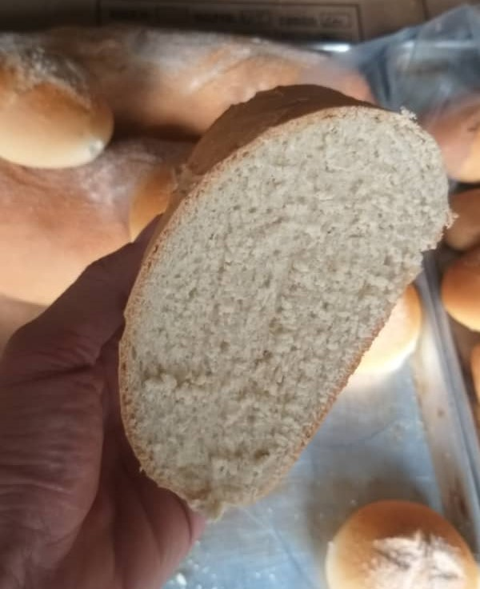
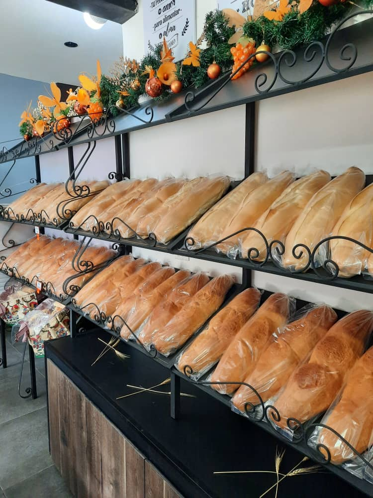
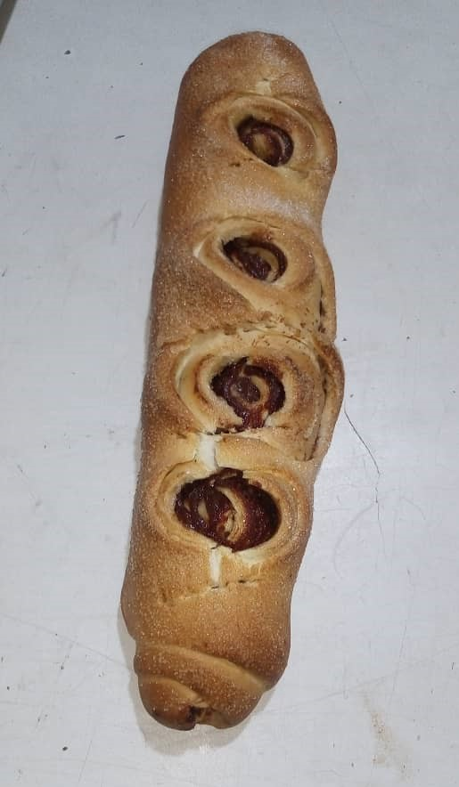

Variedades y Sabores

Es excelente para acompañar con café o chocolate caliente.
Pan de Leche
Es un pan dulce de textura suave clásico de los Andes venezolanos.Es excelente para acompañar con café o chocolate caliente.

Pan Piñita
Es un pan dulce de textura suave similar al pan de leche, recubierto con azucarViene en unidades chicas para la merienda.

Desde Tovar, su lugar de origen, lo recomiendan con queso blanco y mantequilla.
Pan Tovareño
Es un pan dulce de textura robusta aliñado con anís y diferentes aromas propios de las montañas merideñas.Desde Tovar, su lugar de origen, lo recomiendan con queso blanco y mantequilla.

Es el origen de muchas de nuestras masas más atrevidas, el siempre confiable pan relleno es una experiencia de sabores que recuerdan a casa.
Pan Relleno de Membrillo
Es un pan dulce de textura suave relleno de la más deliciosa mermelada de membrilloEs el origen de muchas de nuestras masas más atrevidas, el siempre confiable pan relleno es una experiencia de sabores que recuerdan a casa.

Clineja de Queso
Es un pan dulce entrelazado con queso llanero venezolano.Es tan delicioso que no sabes dónde termina la masa y empieza el queso.